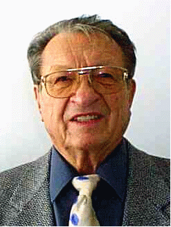

Ceny nobelovského typu v České republice
V České republice začala v r. 2000 působit nadace o názvu „Nadace B. Jana Horáčka Českému Ráji“ (dále jen „Nadace“). Nadace byla zřízena 31. července 2000 a jejím zřizovatelem je Bohuslav Jan Horáček. V souladu se zákonem č. 227/1997 Sb., o nadacích a nadačních fondech, si klade za cíl jednak podporu rozvoje regionu Českého ráje (duchovní, kulturní a ekonomický rozvoj, zejména v oblasti vzdělávání, vědy, sociálních programů, tělovýchovy a sportu), jednak udělování nadačních cen laureátům v celé České republice ve vybraných oborech.
Činnost Nadace byla zpočátku orientována jen na region Českého ráje, avšak v současné době začíná realizovat významný počin, který má trvale stimulovat rozvoj vědy a umění v České republice. Je to udělování prestižních nadačních cen nobelovského typu Praemium Bohemiae osobnostem, které se významným způsobem podílejí na rozvoji vědy a umění v České republice. Ceny Praemium Bohemiae se budou každoročně udělovat ve třech kategoriích:
Cenu tvoří finanční částka a medaile (u cen uvedené první kategorie), resp. soška (u cen druhé kategorie).
Finanční část ceny, určená studentům, bude významně motivační. Bude mít dvě složky. První část ceny (základ) obdrží všichni čeští řešitelé na mezinárodní přírodovědné olympiádě, druhá část ceny (prémie) bude odstupňována podle dosaženého úspěchu na mezinárodní soutěži. Správní rada Nadace rozhodla, že pro r. 2001 budou mít cena tyto složky: základ 15 000 Kč, prémie za zlatou medaili 35 000 Kč, za stříbrnou medaili 15 000 Kč, za bronzovou medaili 10 000 Kč a za čestné uznání 5 000 Kč.
Stoletá zkušenost s udělováním Nobelových cen ukazuje, že objektivně rozhodnout o tom, které osobnosti v daném oboru cenu udělit, není jednoduché. V případě „velkých“ cen Praemium Bohemiae bude osobnosti k ocenění pro každý obor navrhovat minimálně tříčlenná odborná komise. Členy těchto komisí bude na dobu dvou až čtyř let jmenovat správní rada Nadace na základě návrhů vrcholových vědeckých resp. uměleckých institucí (např. České konference rektorů, Akademie věd České republiky, Rady českých vědeckých společností). Správní rada Nadace poté s konečnou platností rozhodne o tom, komu bude v daném kalendářním roce cena udělena. Jednotlivá cena bude mít velikost řádu 1 milion Kč.
Na návrh zřizovatele Nadace rozhodla její správní rada zahájit řízení o udělení ceny Praemium Bohemiae pro rok 2002 zatím jen v oboru medicína, aby se ověřil mechanismus udělování těchto cen. Veřejné vyhlášení tohoto řízení bude provedeno 4. prosince 2001.
¨ Naopak první ceny Praemium Bohemiae v kategorii pro studenty byly uděleny již v roce 2001. V případě těchto cen je totiž mechanismus rozhodování o jejich udělení průhlednější, neboť kritériem pro udělení je (úspěšná) účast na příslušné mezinárodní olympiádě v r. 2001.
Vyhlášení laureátů cen Praemium Bohemiae se provede slavnostním způsobem vždy 4. prosince kalendářního roku - v den narozenin zřizovatele Nadace.

Zřizovatelem Nadace je Bohuslav Jan Horáček, úspěšný podnikatel z Kanárských ostrovů, který pochází z Českého ráje. Život tohoto filantropa a mecenáše českého národa je pozoruhodný. Narodil se dne 4. prosince 1924 v Radvánovicích u Hrubé Skály v chudé venkovské rodině jako nejmladší z osmi dětí. Když mu bylo pět let, zemřel mu otec. Již od malička musel pomáhat při tvrdé práci na malém hospodářství. Ve svém mládí, které spadalo do složitého období hospodářské krize 30. let a do těžkého období nacistické okupace, zažil chudobu i hlad. Nejprve začal studovat na Gymnáziu v Turnově, později přestoupil na zdejší Obchodní akademii, na které v r. 1943 maturoval s vyznamenáním. Pokračovat ve studiu na vysoké škole nemohl, protože české vysoké školy byly za války uzavřeny. To se mu podařilo až po jejím skončení. Za nacistického režimu byl pronásledován a vězněn. Ani poválečné období nebylo pro něj lehké. Po komunistickém převratu v únoru r. 1948 byl jako vysokoškolský student znovu vězněn. Jen s velkými potížemi se mu podařilo dokončit svá studia na Vysoké obchodní škole v Praze (ta byla tehdy součástí Českého vysokého učení technického). V té době se v něm také utvrdila láska k demokracii a rovněž odpor k levicovým i pravicovým extrémům.Protože byl velmi nespokojen s poměry v naší republice po Únoru 48, rozhodl se emigrovat. V roce 1949 se mu podařilo uprchnout z ČSR nejprve do válkou rozbitého Německa. Později odešel i do jiných západních států. Zde, díky svému obchodnímu zaměření a dobrým znalostem cizích jazyků, úspěšně podnikal nejprve v bižuterii, klenotnictví a nakonec (v posledních třiceti letech) postupně vybudoval řetězec hotelů ve Španělsku – na Kanárských ostrovech. Nyní hotely prodal, zabezpečil rodinu a získané prostředky uložil v bezpečných západních bankách. Rozhodl se, že z nemalých úroků vložených prostředků bude trvale pomáhat svým krajanům a také oceňovat ty osobnosti v České republice, které nejvíce přispívají rozvoji vědy a umění.
Bohuslav Jan Horáček zemřel dne 18. října 2002 ve Stuttgartu ve věku nedožitých 78 let. Prezident Václav Havel mu 28. října 2002 udělil in memoriam státní vyznamenání – medaili „Za zásluhy“.